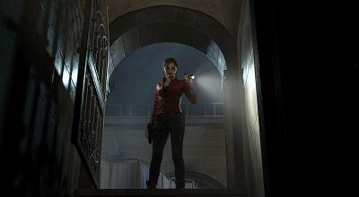
Claire solved a puzzle that opened a secret
door, leading down into the unknown.
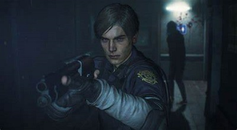
When exploring the world, always watch your back,
even when you think your safe.
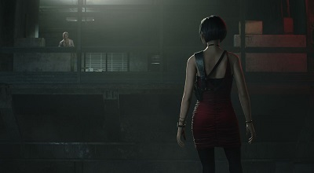
During Ada's playable segment, she chases Annette Birkin
to a waste disposal area in the sewers where
she ambushes Ada, causing her to get injured.
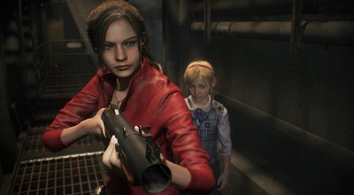
CLaire's side of the story involves protecting a
little girl she finds, Sherry Birkin
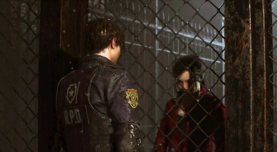
Leon and Claire are separated most of the time
throughout the game, and it emphasizes it with
this close encounter between the pair.
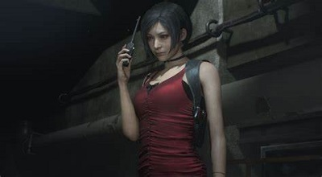
Ada appears to be updating someone about her
mission, but who she is talking to
remains unknown.
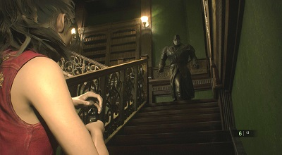
During both Claire's and Leon's playthroughs,
the player encounters and unstoppable enemy
that continuously chases them, only
ceasing when the player is in a saferoom, which are scarce.
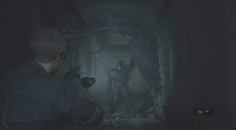
In the first run of both playthroughs,
it is at this moment that the
player first encounters the unstoppable Tyrant.
Better run!
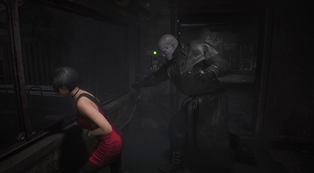
Even Ada encounters the Tyrant during her segment,
with far less firepower than Leon and CLaire.
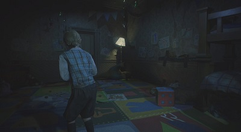
In Claire's playthrough, the player also encounters a
segement where they play as Sherry, trying to escape
the clutches of her kidnapper, the Chief of Police.
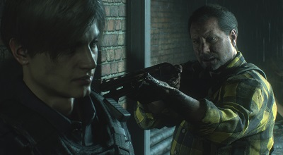
Leon eventually enters a ruined gunshop, owned by Kendo,
who is distraught by his family's demise
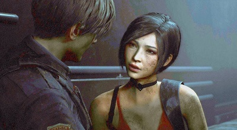
Leon and Ada discussing their plan of action
while in transit to the Umbrella facility.
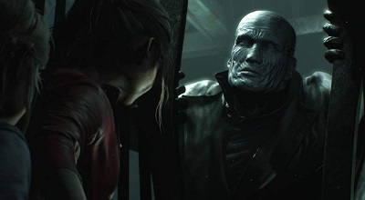
Claire and Sherry almost escaped the Tyrant in an
elevator, but he managed to stop it and pry open the
doors.
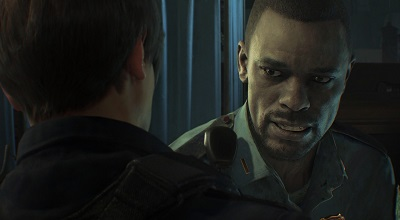
Marvin talking to Leon about how to survive in Raccoon City,
while he declines in health
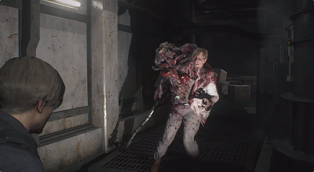
Just after solving the medallion puzzle and leaving the
police station, Leon encounters William Birkin in
stage one of his mutation.
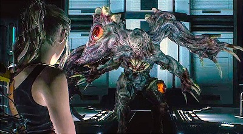
In the umbrella facility, Annette confronts her mutated
husband and is severely injured, leaving Claire to
fight Birkin in her place.
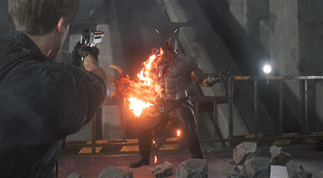
As Leon escapes the self-destruction of the facility on
a lift, he is faced by the Tyrant one last time, but
mutated into a much stronger beast.
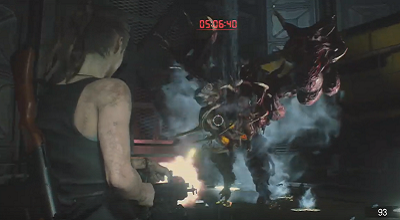
As Claire and Sherry descend with the train car, Birkin
appears, once again, in an advaced stage in his
mutation, but Claire has found something that will aid
her in the fight.
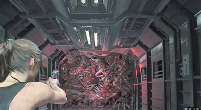
As Leon, Claire, and Sherry depart the destruction of
the facility on the train, Birkin latches onto the
back of the train in his final mutation, leaving
Claire to dispatch of him so they can leave this
nightmare behind.
 Claire: A college student in search of her brother, Chris, who was involved in an incident similar to her own.
Claire: A college student in search of her brother, Chris, who was involved in an incident similar to her own. Sherry: Daughter of William and Annette Birkin, creators of a deadly bioweapon, G virus.
Sherry: Daughter of William and Annette Birkin, creators of a deadly bioweapon, G virus. Leon: Rookie police officer. He managed to get caught up in the horrors of Raccoon City on his first day as a cop.
Leon: Rookie police officer. He managed to get caught up in the horrors of Raccoon City on his first day as a cop. Ada: An assassin/covert operative for Umbrella. She was assigned to acquire the G virus (Explained in "Behind the Story")
Ada: An assassin/covert operative for Umbrella. She was assigned to acquire the G virus (Explained in "Behind the Story")